WWDC 2023: What’s new in Swift
Find hereafter a detailed summary of a video that belongs to a taxonomy of some WWDC footages.
The original video is available on the Apple official website (session 10164).
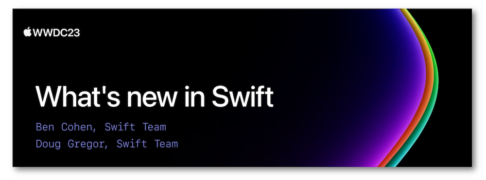
"Join us for an update on Swift. We'll show you how APIs are becoming more extensible and expressive with features like parameter packs and macros. We'll also take you through improvements to interoperability and share how we're expanding Swift's performance and safety benefits everywhere from Foundation to large-scale distributed programs on the server."
Hereafter, the underlined elements lead directly to the playback of the WWDC video at the appropriate moment.
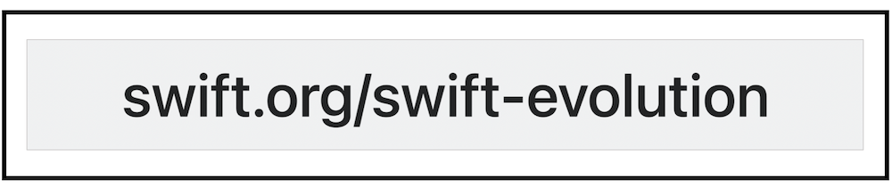
The Swift open source project has set up some changes in its operating mode to head towards a more efficient collaborative work.
Expressive code #
If/else & switch #
These two statements can be used as expressions to streamline the code writing.
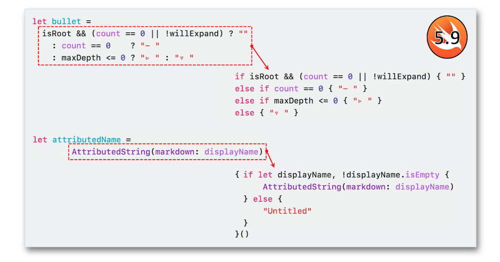
Result builder #
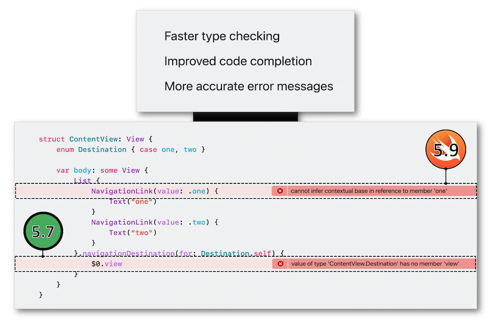
Type parameter pack #
The combination of the argument length with some abstraction types may be reached through the use of Any as the type information with the variadic parameters but Swift 5.9 highlights a new concept called the type parameter pack to suggest a more elegant way of coding this use case.
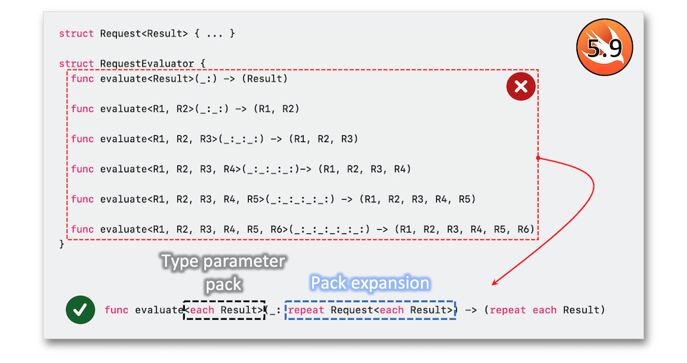
To increase the generics range, it could be interesting to add some protocol conformances to the initial types in order to work directly with them instead of types themselves.
Macros #
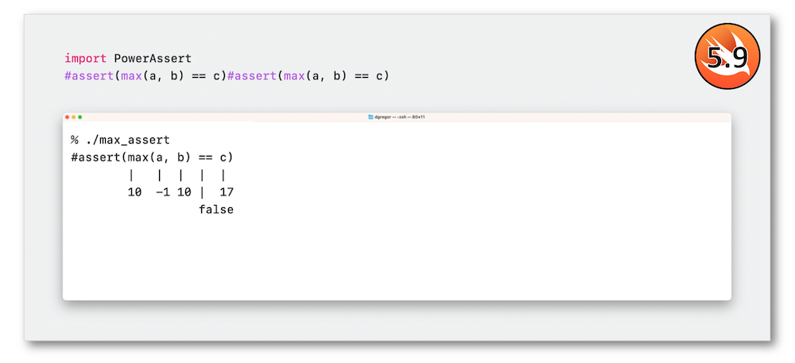
Introduced in Swift 5.9, the macros APIs use the hash syntax for creating code that transforms syntax at compile time.
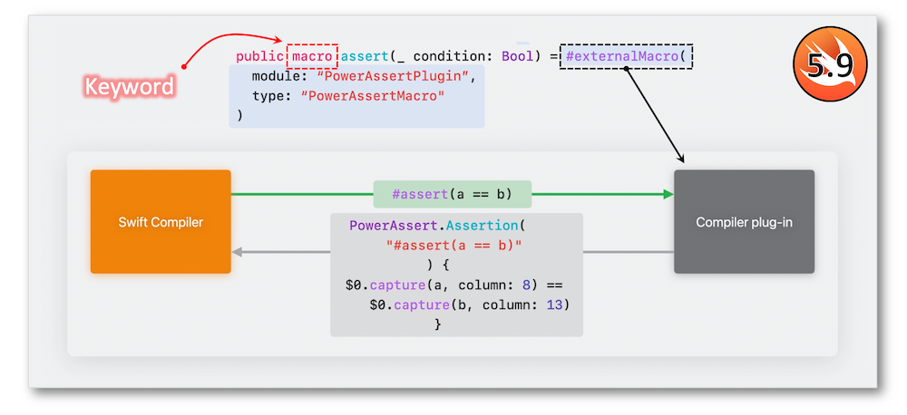
They may be defined through module importing or in separate programs.
As a possible role to be attached to a macro, the freestanding expression macro that creates a piece of code returning a value is highlighted through the new Foundation Predicate APIs.
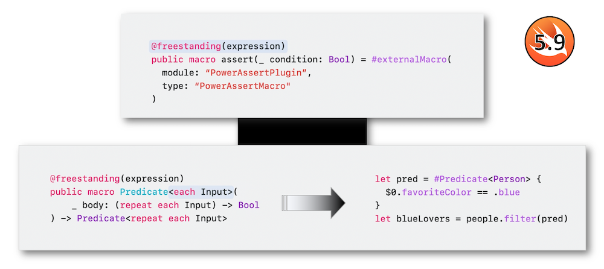
Using the same syntax as property wrappers, the goal of an attached macro is to add very condensed code information while authoring with the at sign.
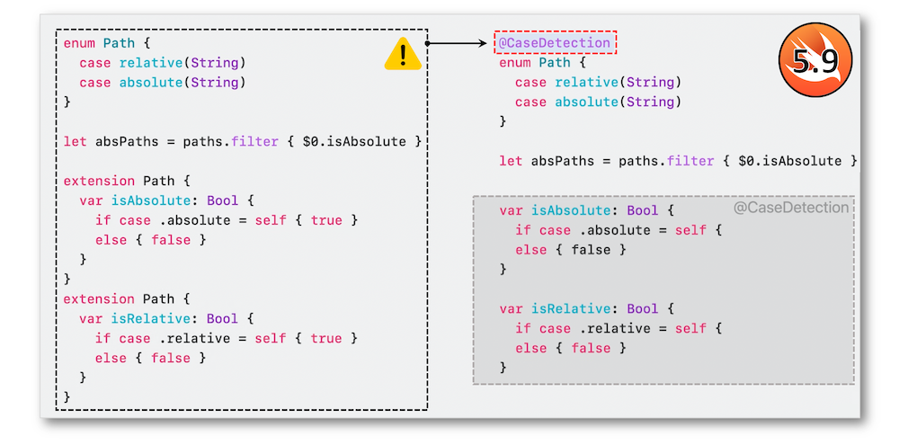
Multiple roles can also be assigned to this type of macro.
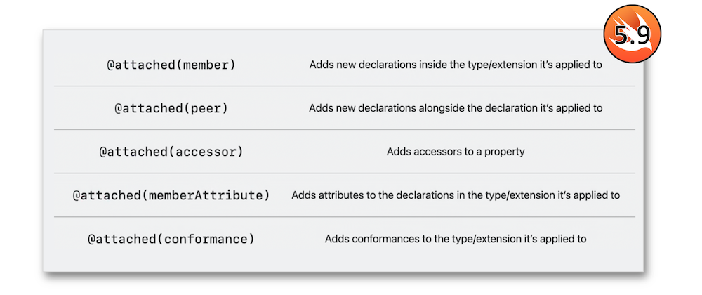
Composed of different macro roles, the new Observable macro generates a SwiftUI dependencies automation for read properties with no needed wrapper.
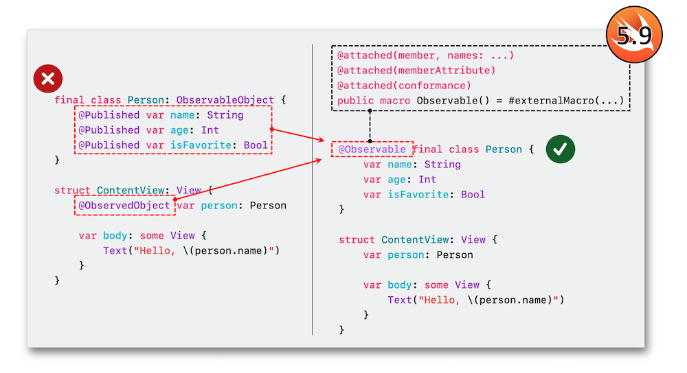
For quickly reaching the code regarding a macro expansion, it'll come handy to use the new Xcode 15 feature suggested in the menu when the macro is selected.
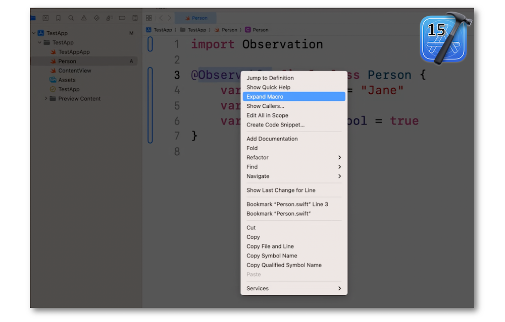
Dates & JSON #
Dates calculation and formatting plus JSON handling have been improved in Swift 5.9.
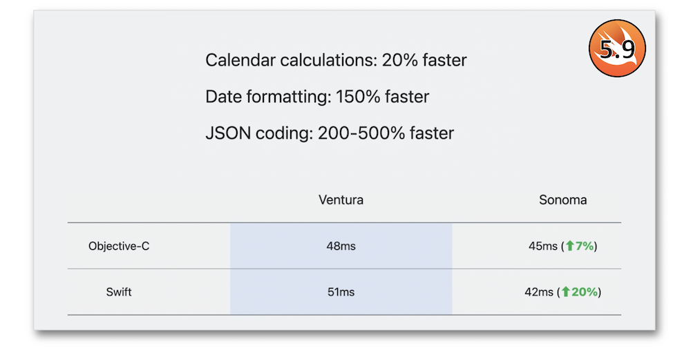
Ownership #
This new concept introduces many enhancements for structs and enums:
-
Remove the copyable default implementation if need be ⟹ 🎬
-
Add consuming methods that can be played only once and that invalidate the value after the method has been run ⟹ 🎬
-
Add a deinit like classes ⟹ 🎬
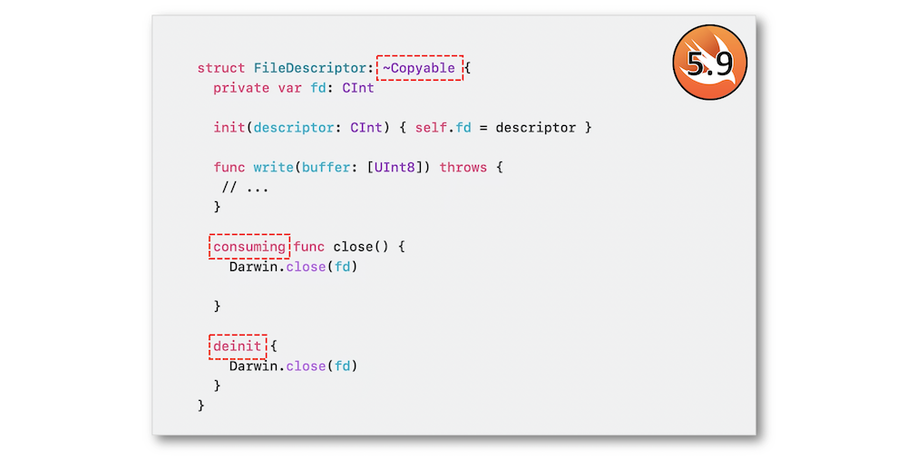
C++ interoperability #
CMake support #
Swift support in CMake has been improved in order to encompass C++ and Swift within a single target.
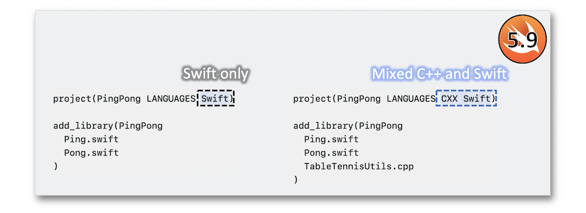
Concurrency #
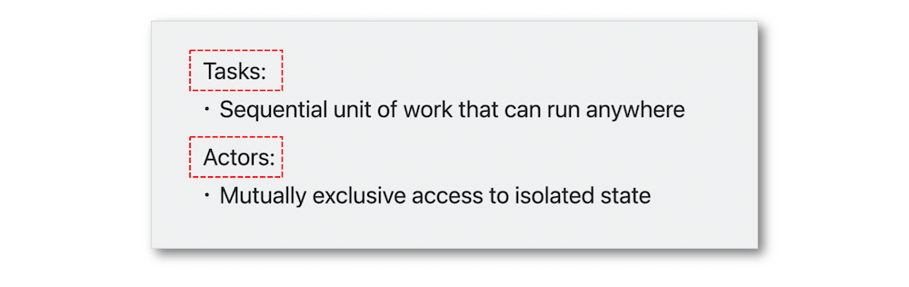
Tasks #
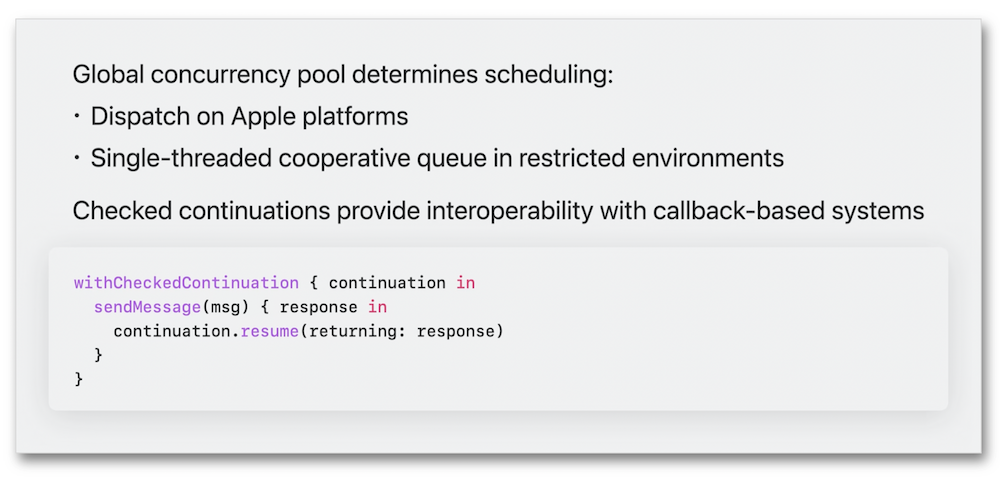
Actors #
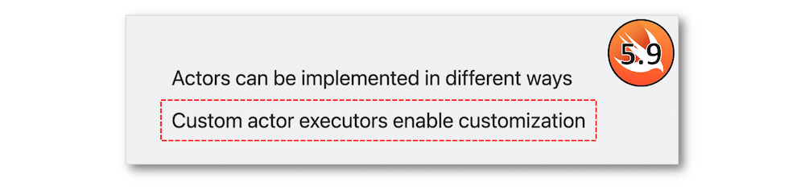
The custom actor executors are an appropriate way to introduce a dedicated dispatch queue for instance.
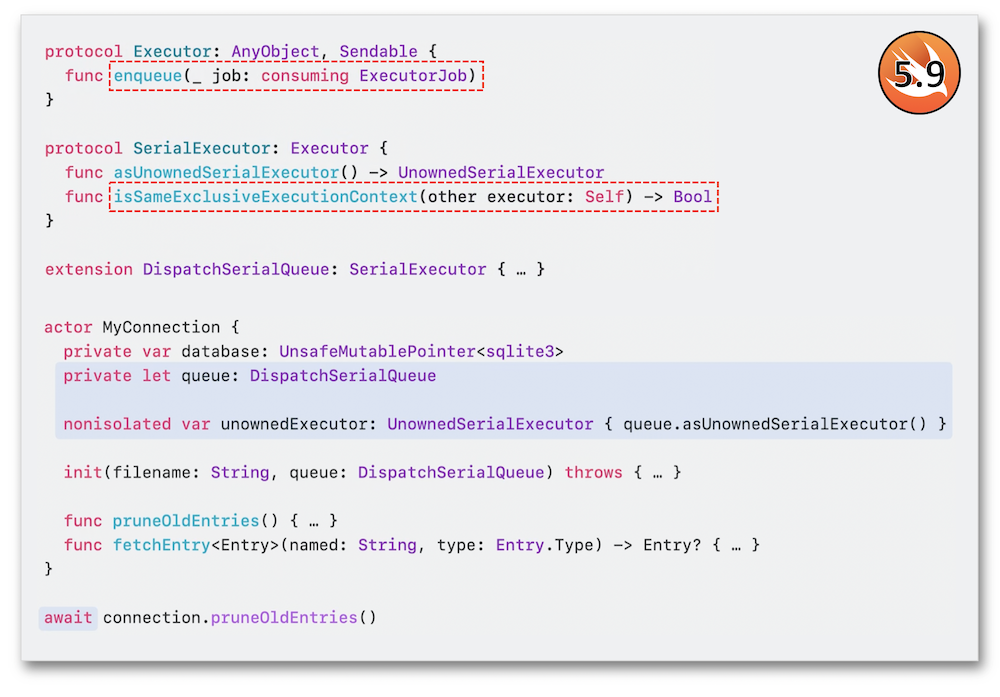
This actors synchronization comes in handy thanks to the conformance of the SerialExecutor protocol that include new methods in Swift 5.9.
Foundation DB #
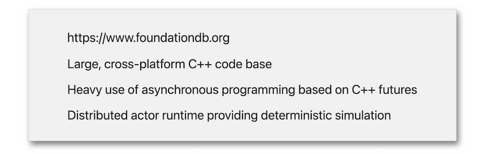